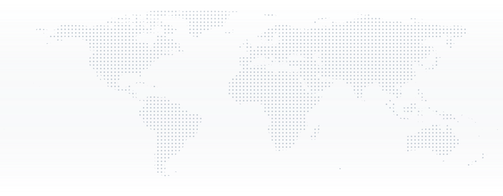

环球市场
正在载入行情…

环球指数
较前收全部环球指数
市场当地时间 · 较前收我的股票持仓
管理持仓股票及股票型 ETF 会从组合分析同步，并按上市地归类。
行情口径
指数和股票采用 Yahoo Finance 的最新可得报价。页面可见时每分钟查询。美股展示可取得的盘前、盘中和盘后报价。Yahoo Finance 的 SGX 和港股公开行情分别延迟约 20 和 15 分钟，休市时展示上一笔报价。小图显示最近的可用交易时段。圆点按指数对应市场所在城市定位。悬停地图或选择圆点可查看该市场的指数与组合分析中同一上市地的持仓。ADR 会出现在对应原股市场，分别显示原股和 ADR 的行情。地图数据来自 Natural Earth。
显示持仓行情时，接口只接收股票代码。行情未核实的持仓可以显示你手动填写的价格，不计算来源不同的日涨跌。